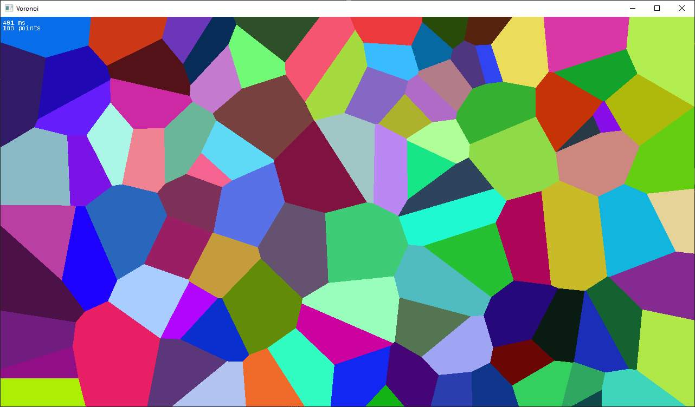
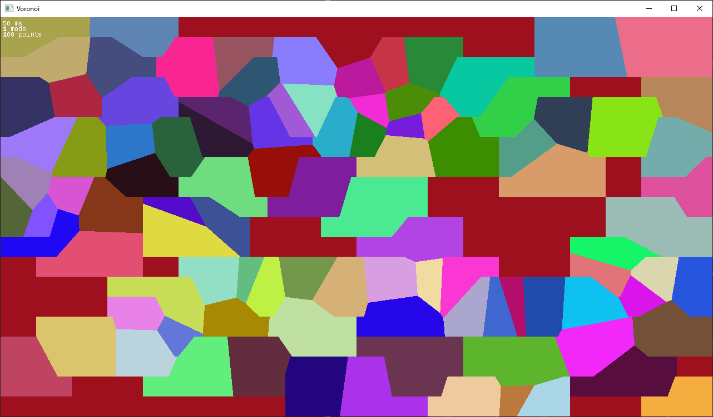

Voronoi diagrams are made by placing points inside of a canvas, and assigning each point a color. Every pixel on the canvas is colored based on its closest point. You end up with cells of color around each point.
This can be very naively programmed by going through each pixel, calculating its distance to each point while remembering which is closest, then setting that pixel's color to the color assigned to the closest point.
void voronoi_naive(Point *points, char *pixels)
{
for (int i = 0; i < SCREEN_W; i += 1)
{
for (int j = 0; j < SCREEN_H; j += 1)
{
float minimum_distance = FLT_MAX;
int minimum_index = 0;
for (int k = 0; k < POINT_COUNT; k += 1)
{
// Get distance from each point
float x_distance = (float)(points[k].x - i);
float y_distance = (float)(points[k].y - j);
float distance = sqrtf((x_distance * x_distance) + (y_distance * y_distance));
if (distance < minimum_distance)
{
minimum_distance = distance;
minimum_index = k;
}
}
// Draw pixel
int offset = (j*4) * SCREEN_W + (i*4);
pixels[offset + 0] = (char)points[minimum_index].b;
pixels[offset + 1] = (char)points[minimum_index].g;
pixels[offset + 2] = (char)points[minimum_index].r;
pixels[offset + 3] = 255;
}
}
}
With this approach, in a 1280x720 window with 100 points, we end up having to compute 1280*720*100 = 92,160,000 distances. It takes about 450ms to generate one diagram. How could we make it faster?
The easiest way is to turn on compiler optimizations. That alone brings us down to 130ms.
Next, for each distance calculation, we're taking the square root to get the actual distance. But, we don't care about actually getting the distance, we only want to compare distances since we're trying to find the minimum. So, we can remove the square root. That brings us down to 100ms.
The next thing we can try is a grid partition approach. In the naive version, we check every pixel against every point. Instead, we could break the diagram into a grid of cells, say 20x20 to start with. Then, we can do a pass on the list of points, and assign each point to its cell. Then, when we iterate over the pixels, we can keep track of which cell this pixel is in, and skip any point that isn't in a cell adjacent to the pixel. Additionally, we can sort the list of points by their x coordinate beforehand, so that we are more likely to skip many points in a row for each pixel.
TODO: Some sort of visualization to better explain the grid partition approach.
void voronoi_grid(Point *points, char *pixels)
{
// Define the subdivisions of the grid
int NUM_COLUMNS = 20;
int NUM_ROWS = 20;
int cell_width = SCREEN_W / NUM_COLUMNS;
int cell_height = SCREEN_H / NUM_ROWS;
for (int i = 0; i < POINT_COUNT; ++i)
{
Point *p = &points[i];
p->cell_x = p->x / cell_width;
p->cell_y = p->y / cell_height;
}
// Now, sort points along X axis
qsort(points, POINT_COUNT, sizeof(Point), compare_points_along_x);
// Iterate over all the pixels
for (int i = 0; i < SCREEN_W; ++i)
{
for (int j = 0; j < SCREEN_H; ++j)
{
float minimum_distance = 100000.0f;
int minimum_index = 0;
int this_cell_x = i / cell_width;
int this_cell_y = j / cell_height;
for (int k = 0; k < POINT_COUNT; ++k)
{
Point *p = &points[k];
// Early exit if we're not in an adjacent grid cell
if (!(abs(p->cell_x-this_cell_x)<=1 && abs(p->cell_y-this_cell_y)<=1))
{
continue;
}
// Get distance from each point
float x_distance = (float)(p->x - i);
float y_distance = (float)(p->y - j);
float distance = (x_distance * x_distance) + (y_distance * y_distance);
if (distance < minimum_distance)
{
minimum_distance = distance;
minimum_index = k;
}
}
// Draw pixel
int offset = (j*4) * SCREEN_W + (i*4);
pixels[offset + 0] = (char)points[minimum_index].b;
pixels[offset + 1] = (char)points[minimum_index].g;
pixels[offset + 2] = (char)points[minimum_index].r;
pixels[offset + 3] = 255;
}
}
}
That did give us a pretty good speedup- now the diagram takes only 50ms. However, it doesn't look quite right.
There are a lot of hard right angles in the diagram, when the edges should be much smoother. What happened here? We're only checking adjacent cells for points. But, we have no guarantee that the closest point, or any points at all, will be in an adjacent cell. Since our points are randomly distributed, for example, all 100 points could happen to land in the top right of the screen. Then, since the pixels in other side of the diagram are only checking the space around them, they won't see any points. One thing we could do is fallback to the slow path for a pixel- if we don't find any points in an adjacent cell, iterate over all the points instead. This should make our diagram look correct, and make things faster on average, but in the worst-case, our performance is still the same as the naive version.
Another way we could try to make the grid partition approach is to make a quadtree partition of the points rather than a naive grid. With this approach, we could guarantee that every partition of the quadtree contains a point.
TODO: Try this quadtree or other partitioning idea.
This problem might fall into the category of "embarassingly parallel". We could use CUDA and run it on our GPU! This will complicate the project a bit, but might be worth it.
__global__ void voronoi_cuda_kernel(Point *points, char *pixels)
{
// threadIdx.x is thread id
// blockDim.x is number of threads
int pixels_per_thread = SCREEN_W / (gridDim.x * blockDim.x);
int start_column = (blockIdx.x * blockDim.x + threadIdx.x) * pixels_per_thread;
int end_column = start_column + pixels_per_thread;
for (int i = start_column; i < end_column; i += 1)
{
for (int j = 0; j < SCREEN_H; j += 1)
{
float minimum_distance = FLT_MAX;
int minimum_index = 0;
for (int k = 0; k < POINT_COUNT; k += 1)
{
// Get distance from each point
float distance = 0.0f;
float x_distance = points[k].x - i;
float y_distance = points[k].y - j;
distance = (x_distance * x_distance) + (y_distance * y_distance);
if (distance < minimum_distance)
{
minimum_distance = distance;
minimum_index = k;
}
}
int offset = (j*4) * SCREEN_W + (i*4);
pixels[offset + 0] = (char)points[minimum_index].b;
pixels[offset + 1] = (char)points[minimum_index].g;
pixels[offset + 2] = (char)points[minimum_index].r;
pixels[offset + 3] = (char)255;
}
}
}
extern "C" void voronoi_cuda(Point *points, char *pixels)
{
Point *device_points;
char *device_pixels;
cudaMalloc((void**)(&device_pixels), sizeof(char)*4*SCREEN_W*SCREEN_H);
cudaMalloc((void**)(&device_points), sizeof(Point)*POINT_COUNT);
cudaMemcpy(device_points, points, sizeof(Point)*POINT_COUNT, cudaMemcpyHostToDevice);
int threads_per_block = 256;
int block_count = (SCREEN_W + threads_per_block - 1) / threads_per_block;
voronoi_cuda_kernel<<>>(device_points, device_pixels);
cudaMemcpy(pixels, device_pixels, sizeof(char)*4*SCREEN_W*SCREEN_H, cudaMemcpyDeviceToHost);
cudaFree(device_points);
cudaFree(device_pixels);
}
First, we write a voronoi_cuda function that takes the same arguments as before- the point list, and the list of pixels to fill. We allocate those buffers on the GPU, and copy the points over. Then, we run the actual kernel that does the work, voronoi_cuda_kernel. This is the function that is heavily parallelized. It does our same "naive plus one" function we wrote at the start, but each invocation of the function computes a separate column of pixels the diagram. When the full diagram is completed, we copy the pixels back to the CPU. Now each diagram takes about 5ms.
5ms is a pretty good time- that means instead of randomizing the points for each diagram, we could instead have them moving smoothly across the screen, and animate the changing diagrams at 200fps.
TODO: The aforementioned animation.
While CUDA is nice, and convenient when we already have a basic C program, there are other ways to use the GPU. For example, we could use a compute shader to do the same job of returning the pixel data from the list of points. Or, we could use a pixel shader to do the computation and draw the pixels.
TODO: Frament shader and compute shader
So far, we've mostly been trying to find ways to parallelize or improve the same naive computation. What if instead, there was a better way to get the diagram? One example is computing a delaunay triangulation. Rather than going pixel by pixel, we can go point by point to build a triangulation of the points, and then color the triangles. The delaunay triangulation is actual the dual of a voronoi triangulation, meaning each vertex in the voronoi diagram is the center of a triangle in the delaunay triangulation. We can implement the algorithm, then find the dual of the graph, then color the triangles.
TODO: Improve the delaunay triangulation, and actual find the dual of it.
TODO: Other alternate algorithms?
TODO: Use a profiler for one of these steps. Maybe before eliminating the sqrtf at the beginning of the post?
TODO: Include some reference to Casey's Performance Aware Programming course. Maybe reference the recurring haversine distance problem, and use some of his techniques.